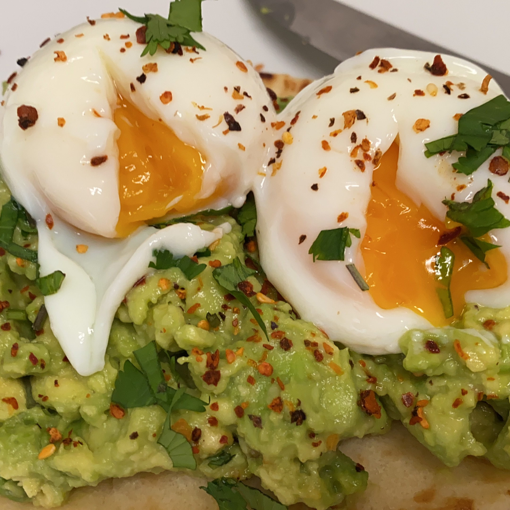

Back to Odin Recipes - Home
Avocado Toast

Description
Photo by Douglas Bagg on
Unsplash
The bane of the Boomer generation. A meal fit for a Millenial. By adding a slice of tomato puts this allegedly bank-breaking dish,
one can see their credit score plummet even further.
Ingredients
- 1 large avocado, pitted
- 2 slices of your favorite artisinal whole-grain sandwich bread
- 2 slices of tomato
- salt, to taste
- black pepper, to taste
- splash of lemon juice
- some red pepper flakes (optional)
Steps:
- Step 1: In a bowl, mash up avocado with a fork. Add salt, pepper and lemon juice to avocado mash. Combine well.
- Step 2: Toast bread to your liking and place on a plate.
- Step 3: Top toast slices with even amounts of mashed avocado mixture. Add red pepper flakes if desired, and top with a slice of tomato.